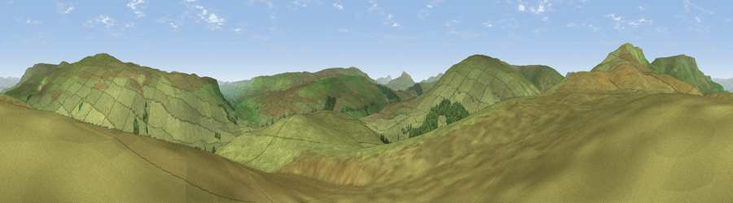

Ewe Hill
#16015 in England · top 45% of its area beats it · near CotterdaleThe view, rendered

A 360° render of this exact spot computed from the terrain model, tree cover and land cover — summer colours, afternoon light, calibrated against photographs of famous viewpoints. Real trees, hedges and buildings will differ in detail.
The panorama
Grey silhouette: terrain skyline in each direction (720 bearings, Earth curvature and refraction included). Dashed green: skyline with trees (+15 m) and buildings (+8 m) as obstacles. Blue strip: how far the ground is visible on each bearing.
Where the view opens
Wedge length = distance to the farthest visible ground on that bearing (vegetation-aware). Rings at 10, 25 and 50 km.
What fills the view
97% grassland · 3% woodland
Angular shares of the visible panorama (visual magnitude), not map area. Landscape diversity 0.05 (0–1 Shannon).
Key numbers
More beautiful places nearby
The staircase of upgrades: each row has a higher view potential than everything closer. Driving times are estimates from straight-line distance, calibrated against real road routing — check an actual route before setting out.
| Place | Direction | Drive | Score |
|---|---|---|---|
| Grisedale Pike | SW · 3 km | ~7 min | 66.3 |
| Swarth Fell | NW · 3 km | ~8 min | 73.1 |
| Wild Boar Fell | NNW · 5 km | ~11 min | 75.0 |
| Viewpoint c9983_7527 | NNW · 5 km | ~11 min | 76.3 |
| Viewpoint c10024_7603 | NNE · 7 km | ~15 min | 76.9 |
| Calders | W · 11 km | ~21 min | 79.0 |
| Whernside | SSW · 13 km | ~24 min | 79.9 |
| Warton Crag | SW · 36 km | ~54 min | 83.2 |
54.34355, -2.33953 · source: osm peak · position refined by local search. Computed location — check access rights before visiting.